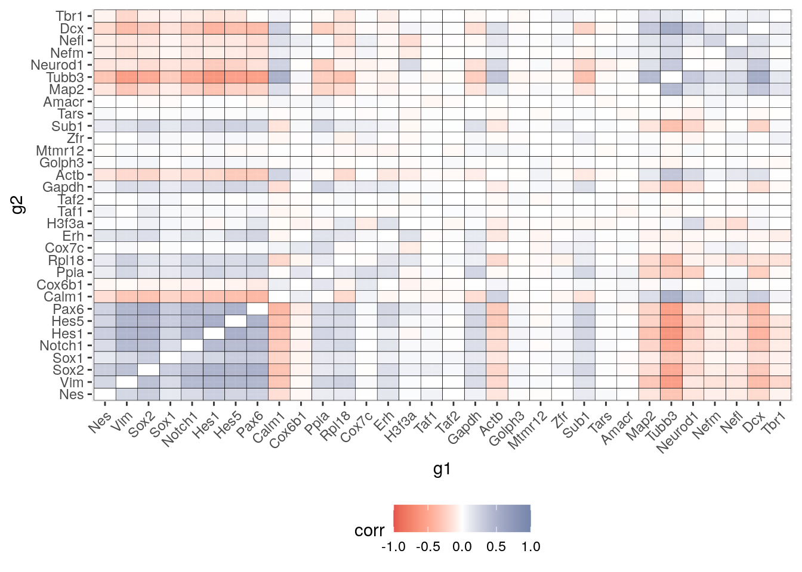
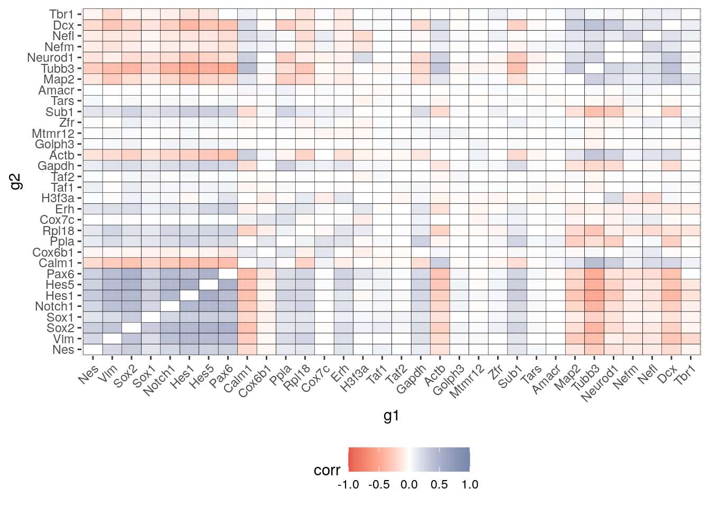
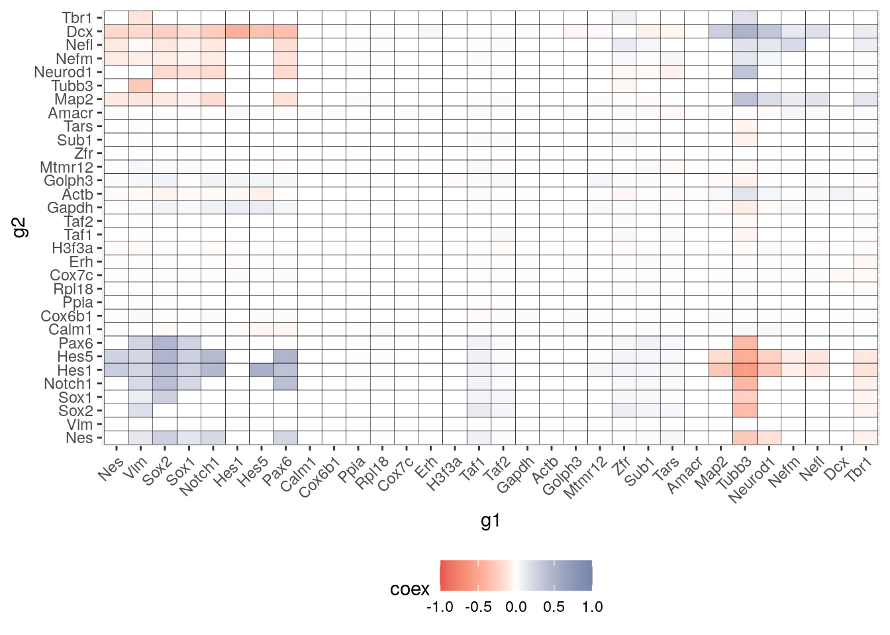

input_dir = "Data/mouse_dentate_gyrus/"
E16.5_cotan = readRDS("Data/E16.5_cleaned.cotan.RDS")
t = "E16.5"
pbmc.data = read.csv("Data/mouse_dentate_gyrus/separation_age/E16.5.csv",
header = T, row.names = 1)
pbmc.data = pbmc.data[, colnames(E16.5_cotan@raw)]
rownames(pbmc.data)[grep("_", rownames(pbmc.data))] = gsub("_",
"-", rownames(pbmc.data)[grep("_", rownames(pbmc.data))])
pbmc.data = as(as.matrix(pbmc.data), "sparseMatrix")
lib.size = colSums(pbmc.data)
hist(lib.size, prob = TRUE, breaks = 145)fit <- fitdist(lib.size, "nbinom")
prob.treshold = qnbinom((1 - 0.001), size = fit$estimate[1],
mu = fit$estimate[2])
pbmc.data = pbmc.data[, names(lib.size[lib.size <
prob.treshold])]
lib.size = colSums(pbmc.data)
hist(lib.size, prob = TRUE, breaks = 145)pbmc <- CreateSeuratObject(counts = pbmc.data,
project = "hipp_1_E16.5", min.cells = 3,
min.features = 200)
pbmc
#> An object of class Seurat
#> 15604 features across 2238 samples within 1 assay
#> Active assay: RNA (15604 features, 0 variable features)pbmc[["percent.mt"]] <- PercentageFeatureSet(pbmc,
pattern = "^mt-")
VlnPlot(pbmc, features = c("nFeature_RNA",
"nCount_RNA", "percent.mt"), ncol = 3)plot1 <- FeatureScatter(pbmc, feature1 = "nCount_RNA",
feature2 = "percent.mt")
plot2 <- FeatureScatter(pbmc, feature1 = "nCount_RNA",
feature2 = "nFeature_RNA")
CombinePlots(plots = list(plot1, plot2))subset(pbmc, subset = nFeature_RNA > 200 &
nFeature_RNA < 4000 & percent.mt < 7.5)
#> An object of class Seurat
#> 15604 features across 2083 samples within 1 assay
#> Active assay: RNA (15604 features, 0 variable features)
length(pbmc$nFeature_RNA)
#> [1] 2238plot1 <- FeatureScatter(pbmc, feature1 = "nCount_RNA",
feature2 = "percent.mt")
plot2 <- FeatureScatter(pbmc, feature1 = "nCount_RNA",
feature2 = "nFeature_RNA")
CombinePlots(plots = list(plot1, plot2))pbmc[["RNA"]]@data[1:10, 1:10]
#> 10 x 10 sparse Matrix of class "dgCMatrix"
#> [[ suppressing 10 column names 'X10X82_1_CAGAACAAGTTCTG.', 'X10X82_1_TCACTTCTCGCATC.', 'X10X82_1_TCACTCATATGCTG.' ... ]]
#>
#> 0610007P14Rik 1.7126992 1.143042 1.077085 0.9062106 2.082862 0.8906782
#> 0610009B22Rik 0.7589239 1.143042 . 0.9062106 1.206710 0.8906782
#> 0610009L18Rik . . . 0.9062106 . .
#> 0610009O20Rik 1.1853870 . . . . .
#> 0610010F05Rik . 1.143042 . . . 0.8906782
#> 0610010K14Rik 1.7126992 . . 0.9062106 . .
#> 0610011F06Rik . . 1.077085 0.9062106 1.206710 .
#> 0610012G03Rik 1.7126992 1.143042 1.918146 1.3736782 1.206710 1.3541748
#> 0610025J13Rik . . . . . .
#> 0610030E20Rik . . . . . 0.8906782
#>
#> 0610007P14Rik 1.3936138 . 1.680767 1.8883605
#> 0610009B22Rik . 1.700242 . .
#> 0610009L18Rik . . . .
#> 0610009O20Rik . . . .
#> 0610010F05Rik 0.9221505 . . .
#> 0610010K14Rik . . . 0.8763564
#> 0610011F06Rik 0.9221505 . . 0.8763564
#> 0610012G03Rik 0.9221505 2.042896 1.158401 1.3361221
#> 0610025J13Rik 0.9221505 . . .
#> 0610030E20Rik . . . .Code to produce the heatmap of Seurat correlation matrix vs cotan heatmap on selected genes.
seurat.data = pbmc[["RNA"]]@data
seurat.data.cor.pearson = cor(t(as.matrix(seurat.data)),
method = "pearson")
# write.csv(seurat.data.cor, file =
# '../results/2019.12.16/E16.5_hipp_Seurat_correlations.csv'
# )
partial.coex.pearson = seurat.data.cor.pearson[rownames(seurat.data.cor.pearson) %in%
c(tf1, tf2, hk), colnames(seurat.data.cor.pearson) %in%
c(tf1, tf2, hk)]
diag(partial.coex.pearson) = 0
seurat.data.cor.spearman = cor(t(as.matrix(seurat.data)),
method = "spearman")
# write.csv(seurat.data.cor, file =
# '../results/2019.12.16/E16.5_hipp_Seurat_correlations.csv'
# )
partial.coex.spearman = seurat.data.cor.spearman[rownames(seurat.data.cor.spearman) %in%
c(tf1, tf2, hk), colnames(seurat.data.cor.spearman) %in%
c(tf1, tf2, hk)]
diag(partial.coex.spearman) = 0partial.coex.pearson = reshape2::melt(partial.coex.pearson)
colnames(partial.coex.pearson) = c("g1","g2","corr")
partial.coex.pearson$g1 <- factor(partial.coex.pearson$g1, c(tf1,hk,tf2))
partial.coex.pearson$g2 <- factor(partial.coex.pearson$g2, c(tf1,hk,tf2))
P = ggplot(partial.coex.pearson) +
geom_tile(aes(x=g1,y=g2, fill = corr),colour = "black", show.legend = TRUE) +
# facet_grid( g1 ~ g2 ,scales = "free", space = "free") +
scale_fill_gradient2(mid = "white",limits=c(-1, 1),low = "#DC0000B2", high = "#3C5488B2")+
#scale_fill_gradient2(low = "darkred", mid = "white", high = "darkblue", midpoint = 0,na.value = "grey80", space = "Lab", guide = "colourbar", aesthetics = "fill", limits = lim_coex, oob=scales::squish)+ theme(legend.position="bottom")+
theme(#legend.title = element_blank(),
#strip.text.x = element_text(color = "red"),
#axis.text.y = element_text(color = ),
axis.text.x = element_text(angle=45,hjust=1,vjust=1.0),
legend.position="bottom"
) #+geom_text(aes(label=ifelse(t_hk == "hk", "H","")), color="grey", size=3)
P
partial.coex.spearman = reshape2::melt(partial.coex.spearman)
colnames(partial.coex.spearman) = c("g1","g2","corr")
partial.coex.spearman$g1 <- factor(partial.coex.spearman$g1, c(tf1,hk,tf2))
partial.coex.spearman$g2 <- factor(partial.coex.spearman$g2, c(tf1,hk,tf2))
S = ggplot(partial.coex.spearman) +
geom_tile(aes(x=g1,y=g2, fill = corr),colour = "black", show.legend = TRUE) +
# facet_grid( g1 ~ g2 ,scales = "free", space = "free") +
scale_fill_gradient2(mid = "white",limits=c(-1, 1),low = "#DC0000B2", high = "#3C5488B2")+
#scale_fill_gradient2(low = "darkred", mid = "white", high = "darkblue", midpoint = 0,na.value = "grey80", space = "Lab", guide = "colourbar", aesthetics = "fill", limits = lim_coex, oob=scales::squish)+ theme(legend.position="bottom")+
theme(#legend.title = element_blank(),
#strip.text.x = element_text(color = "red"),
#axis.text.y = element_text(color = ),
axis.text.x = element_text(angle=45,hjust=1,vjust=1.0),
legend.position="bottom"
) #+geom_text(aes(label=ifelse(t_hk == "hk", "H","")), color="grey", size=3)
S
#load_data3.0(input_dir, cond = t, genes = c(tf1,tf2,hk), prefix = "p_value_")
# COTAN: after loading in memeory the coex matrix
p_value_E16.5 = get.pval(object = E16.5_cotan, gene.set.col = c(tf1,tf2,hk),
gene.set.row = c(tf1,tf2,hk))
#> [1] "Nes" "Vim" "Sox2" "Sox1" "Notch1" "Hes1" "Hes5"
#> [8] "Pax6" "Map2" "Tubb3" "Neurod1" "Nefm" "Nefl" "Dcx"
#> [15] "Tbr1" "Calm1" "Cox6b1" "Ppia" "Rpl18" "Cox7c" "Erh"
#> [22] "H3f3a" "Taf1" "Taf2" "Gapdh" "Actb" "Golph3" "Mtmr12"
#> [29] "Zfr" "Sub1" "Tars" "Amacr"
#> [1] "Get p-values on a set of genes on columns on a set of genes on rows"
#> [1] "Using function S"
#> [1] "function to generate S "
partial.coex.cotan = E16.5_cotan@coex[rownames(E16.5_cotan@coex) %in% c(tf1,tf2,hk),colnames(E16.5_cotan@coex) %in% c(tf1,tf2,hk)]
#partial.pval.cotan = p_value_E16.5[rownames(p_value_E16.5) %in% c(tf1,tf2,hk),colnames(p_value_E16.5) %in% c(tf1,tf2,hk)]
partial.pval.cotan =p_value_E16.5
#partial.pval.cotan = partial.pval.cotan <= 0.05
#partial.coex.cotan[!partial.pval.cotan] <- 0
partial.coex.cotan = reshape2::melt(as.matrix(partial.coex.cotan))
colnames(partial.coex.cotan) = c("g1","g2","coex")
for (n in c(1:nrow(partial.coex.cotan))) {
if (partial.coex.cotan[n,"g1"] == partial.coex.cotan[n,"g2"]) {
partial.coex.cotan[n,"coex"]=0
}
}
partial.coex.cotan$g1 <- factor(partial.coex.cotan$g1, c(tf1,hk,tf2))
partial.coex.cotan$g2 <- factor(partial.coex.cotan$g2, c(tf1,hk,tf2))
C = ggplot(partial.coex.cotan) +
geom_tile(aes(x=g1,y=g2, fill = coex),colour = "black", show.legend = TRUE) +
# facet_grid( g1 ~ g2 ,scales = "free", space = "free") +
scale_fill_gradient2(mid = "white",limits=c(round(min(partial.coex.cotan$coex),digits = 0), round(max(partial.coex.cotan$coex),digits = 0)),low = "#DC0000B2", high = "#3C5488B2")+
#scale_fill_gradient2(low = "darkred", mid = "white", high = "darkblue", midpoint = 0,na.value = "grey80", space = "Lab", guide = "colourbar", aesthetics = "fill", limits = lim_coex, oob=scales::squish)+ theme(legend.position="bottom")+
theme(#legend.title = element_blank(),
#strip.text.x = element_text(color = "red"),
#axis.text.y = element_text(color = ),
axis.text.x = element_text(angle=45,hjust=1,vjust=1.0),
legend.position="bottom"
)#+geom_text(aes(label=ifelse(t_hk == "hk", "H","")), color="grey", size=3)
#figure <- ggarrange(C, S,
# labels = c("Co.", "Sp."),
# ncol = 2, nrow = 1)
#figure
C
sessionInfo()
#> R version 4.0.4 (2021-02-15)
#> Platform: x86_64-pc-linux-gnu (64-bit)
#> Running under: Ubuntu 18.04.5 LTS
#>
#> Matrix products: default
#> BLAS: /usr/lib/x86_64-linux-gnu/openblas/libblas.so.3
#> LAPACK: /usr/lib/x86_64-linux-gnu/libopenblasp-r0.2.20.so
#>
#> locale:
#> [1] LC_CTYPE=en_US.UTF-8 LC_NUMERIC=C
#> [3] LC_TIME=en_US.UTF-8 LC_COLLATE=en_US.UTF-8
#> [5] LC_MONETARY=en_US.UTF-8 LC_MESSAGES=en_US.UTF-8
#> [7] LC_PAPER=en_US.UTF-8 LC_NAME=C
#> [9] LC_ADDRESS=C LC_TELEPHONE=C
#> [11] LC_MEASUREMENT=en_US.UTF-8 LC_IDENTIFICATION=C
#>
#> attached base packages:
#> [1] stats graphics grDevices utils datasets methods base
#>
#> other attached packages:
#> [1] COTAN_0.1.0 ggpubr_0.4.0 gridExtra_2.3 ggrepel_0.9.1
#> [5] ggplot2_3.3.3 ggsci_2.9 fitdistrplus_1.1-3 survival_3.2-10
#> [9] MASS_7.3-53.1 Matrix_1.3-2 SeuratObject_4.0.0 Seurat_4.0.1
#> [13] dplyr_1.0.4
#>
#> loaded via a namespace (and not attached):
#> [1] circlize_0.4.12 readxl_1.3.1 backports_1.2.1
#> [4] plyr_1.8.6 igraph_1.2.6 lazyeval_0.2.2
#> [7] splines_4.0.4 listenv_0.8.0 scattermore_0.7
#> [10] digest_0.6.27 htmltools_0.5.1.1 fansi_0.4.2
#> [13] magrittr_2.0.1 tensor_1.5 cluster_2.1.1
#> [16] ROCR_1.0-11 openxlsx_4.2.3 ComplexHeatmap_2.6.2
#> [19] globals_0.14.0 matrixStats_0.58.0 spatstat.sparse_2.0-0
#> [22] colorspace_2.0-0 rappdirs_0.3.3 haven_2.3.1
#> [25] xfun_0.22 crayon_1.4.0 jsonlite_1.7.2
#> [28] spatstat.data_2.1-0 zoo_1.8-8 glue_1.4.2
#> [31] polyclip_1.10-0 gtable_0.3.0 leiden_0.3.7
#> [34] GetoptLong_1.0.5 car_3.0-10 shape_1.4.5
#> [37] future.apply_1.7.0 BiocGenerics_0.36.0 abind_1.4-5
#> [40] scales_1.1.1 DBI_1.1.1 rstatix_0.7.0
#> [43] miniUI_0.1.1.1 Rcpp_1.0.6 viridisLite_0.3.0
#> [46] xtable_1.8-4 clue_0.3-58 reticulate_1.18
#> [49] spatstat.core_1.65-5 foreign_0.8-81 stats4_4.0.4
#> [52] htmlwidgets_1.5.3 httr_1.4.2 RColorBrewer_1.1-2
#> [55] ellipsis_0.3.1 ica_1.0-2 farver_2.1.0
#> [58] pkgconfig_2.0.3 sass_0.3.1 uwot_0.1.10
#> [61] deldir_0.2-10 utf8_1.2.1 labeling_0.4.2
#> [64] tidyselect_1.1.0 rlang_0.4.10 reshape2_1.4.4
#> [67] later_1.1.0.1 munsell_0.5.0 cellranger_1.1.0
#> [70] tools_4.0.4 generics_0.1.0 broom_0.7.5
#> [73] ggridges_0.5.3 evaluate_0.14 stringr_1.4.0
#> [76] fastmap_1.1.0 yaml_2.2.1 goftest_1.2-2
#> [79] knitr_1.31 zip_2.1.1 purrr_0.3.4
#> [82] RANN_2.6.1 pbapply_1.4-3 future_1.21.0
#> [85] nlme_3.1-152 mime_0.10 formatR_1.8
#> [88] compiler_4.0.4 filelock_1.0.2 plotly_4.9.3
#> [91] curl_4.3 png_0.1-7 ggsignif_0.6.1
#> [94] spatstat.utils_2.1-0 tibble_3.1.0 bslib_0.2.4
#> [97] stringi_1.5.3 highr_0.8 basilisk.utils_1.2.2
#> [100] forcats_0.5.1 lattice_0.20-41 vctrs_0.3.6
#> [103] pillar_1.5.1 lifecycle_1.0.0 spatstat.geom_1.65-5
#> [106] lmtest_0.9-38 jquerylib_0.1.3 GlobalOptions_0.1.2
#> [109] RcppAnnoy_0.0.18 data.table_1.14.0 cowplot_1.1.1
#> [112] irlba_2.3.3 httpuv_1.5.5 patchwork_1.1.1
#> [115] R6_2.5.0 promises_1.2.0.1 KernSmooth_2.23-18
#> [118] rio_0.5.16 IRanges_2.24.1 parallelly_1.24.0
#> [121] codetools_0.2-18 assertthat_0.2.1 rjson_0.2.20
#> [124] withr_2.4.1 sctransform_0.3.2 S4Vectors_0.28.1
#> [127] mgcv_1.8-33 parallel_4.0.4 hms_1.0.0
#> [130] grid_4.0.4 rpart_4.1-15 basilisk_1.2.1
#> [133] tidyr_1.1.2 rmarkdown_2.7 carData_3.0-4
#> [136] Cairo_1.5-12.2 Rtsne_0.15 shiny_1.6.0